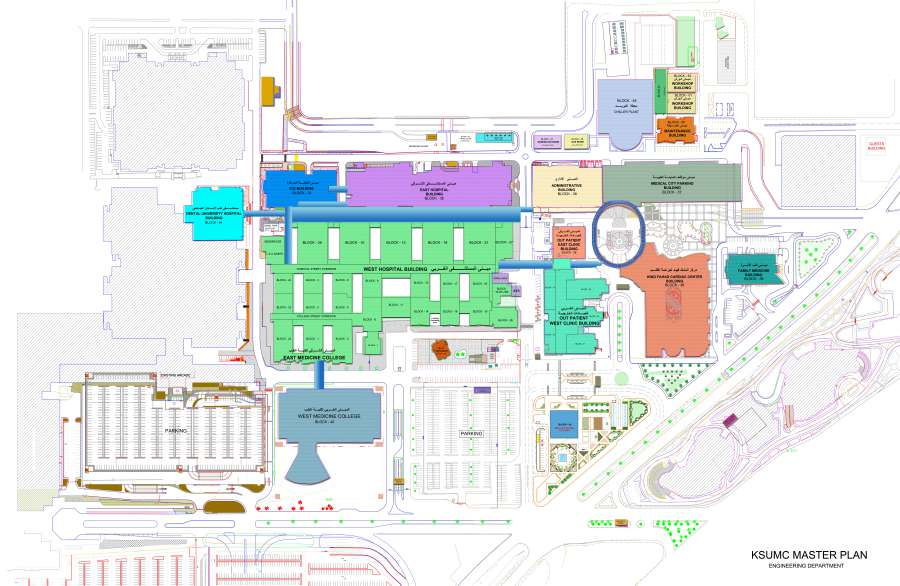
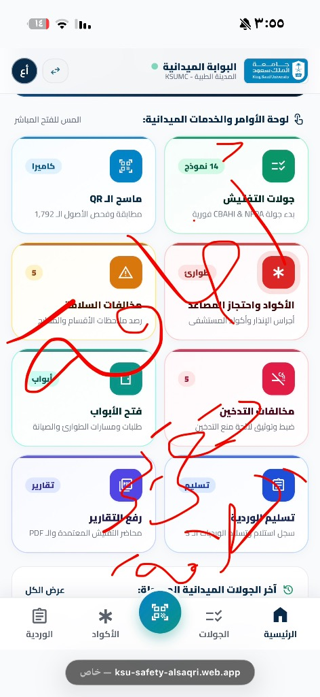
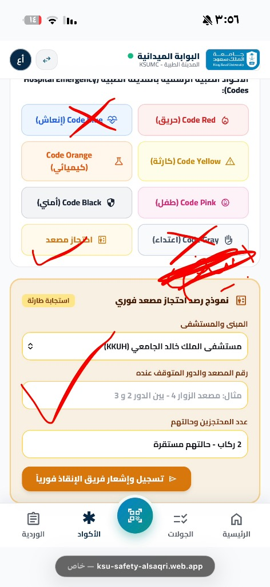
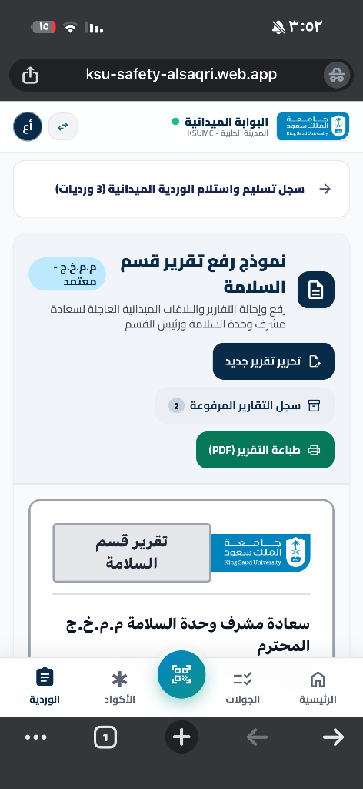

التقرير التنفيذي المعتمد لمنظومة سلامة المنشآت الطبية
جاهز للإرسال بالبريد الإلكتروني للقيادات العليا أو التصدير بصيغة PDF
جاهز للإرسال بالبريد الإلكتروني للقيادات العليا أو التصدير بصيغة PDF
يطيب لنا أن نرفع لسعادتكم هذا التقرير التعريفي والتنفيذي الشامل لـ المنظومة الرقمية الذكية لإدارة جولات وتفتيش السلامة الميدانية (CBAHI / NFPA / JCI) بالمدينة الطبية بجامعة الملك سعود، متضمناً الأهداف الاستراتيجية، المكتسبات المؤسسية، والشرح المصور لبوابات المنظومة الست التي تم تدشينها وتشغيلها ميدانياً لخدمة كافة مستشفيات ومرافق المدينة الطبية.
صُممت المنظومة لتجسد رؤية المملكة 2030 في التحول الرقمي الشامل لقطاع الرعاية الصحية، وضمان تحقيق الامتثال التام مع المعايير الإلزامية:
| المحور التشغيلي | الوضع التقليدي السابق (ورقي) | منصة رصد الذكية (الوضع الذكي الحالي) |
|---|---|---|
| إدارة الجولات والتفتيش | سجلات ودفاتر ورقية عرضة للتلف والفقدان والتأخر | تحول رقمي كامل 100% بدون ورق (Paperless) مع أرشفة سحابية فورية |
| كشف نقص تفتيش الأدوار | لا يتم اكتشاف نقص الأدوار إلا بعد انقضاء أيام أو أسابيع | مصفوفة كشف النقص اللحظية (Floor Gaps Matrix) تنبه المشرف فوراً عن أي دور ناقص |
| أكواد الطوارئ واحتجاز المصاعد | اتصالات وبلاغات هاتفية تفتقر للتوثيق الزمني اللحظي | مركز مباشر للأكواد الـ 8 واحتجاز المصاعد وتوثيق وقت الإعلان ووقت الإغلاق بدقة |
| فحص طفايات وصناديق الحريق | مراجعة يدوية بطيئة لآلاف الطفايات عبر كروت ورقية | ماسح الـ QR الذكي المطابق فورياً لـ 1,792 أصل مسجل بالباركود والموقع والضغط |
| تقارير إدارة السلامة الرسمية | نماذج ورقية تتأخر في التمرير والتواقيع اليدوية | نموذج إلكتروني موحد ومعتمد (KSU-SAF-REP) بصفحة منفرده وتوجيه إداري فوري |
| العمل في القبو والأنفاق | تعطل الأنظمة السحابية لانقطاع تغطية الإنترنت | تقنية السيادة دون اتصال (Offline-First PWA) تعمل وتخزن البيانات في أعمق طوابق القبو |
تغطي المنظومة كافة المستشفيات والمراكز التخصصية التابعة للمدينة الطبية بجامعة الملك سعود:

البوابة التشغيلية اليومية المخصصة للعمل الميداني على الجوال والأجهزة اللوحية
أهم وظائف البوابة الميدانية:

تم إلغاء النوافذ المنبثقة وتحويل كافة الأكواد لنماذج تفاعلية مباشرة وسريعة أسفل الأزرار
الأكواد الـ 8 المعتمدة لإدارة السلامة:

تم عزله في صفحة منفرده مع اختصار مباشر في الشاشة الرئيسية وإزالته من صفحة الوردية
مواصفات نموذج تقرير إدارة السلامة (KSU-SAF-REP):

إدارة الورديات وتوزيع الكوادر الـ 20، سجل الأصول، خريطة الحرم التفاعلية، وتصدير التقارير.
جدول التفتيش الشهري 24/7، تحليلات مؤشرات سباهي DASH، وسجل إجراءات التحسين الوقائية CAPA.
لوحة قيادة مركزية موسعة للشاشات الجدارية التلفزيونية في غرف التحكم لمتابعة البلاغات الحية لحظياً.
المكرمون سعادة قيادات وإدارة المدينة الطبية بجامعة الملك سعود المحترمين
السلام عليكم ورحمة الله وبركاته،،،
يسر إدارة السلامة بالإدارة العامة للأمن والسلامة بالمدينة الطبية بجامعة الملك سعود أن يرفع لسعادتكم التقرير التنفيذي للتشغيل الميداني لـ منصة رصد الذكية (نظام جولات السلامة الميدانية بالمدينة الطبية بجامعة الملك سعود).
تعتبر هذه المنظومة نقلة نوعية في التحول الرقمي الكامل لعمليات التفتيش والرقابة الميدانية، متوافقة بنسبة 100% مع معايير المركز السعودي لاعتماد المنشآت الصحية (CBAHI)، واشتراطات الدفاع المدني، ومواصفات الجمعية الوطنية الأمريكية للحماية من الحرائق (NFPA 99/101).
أهم مخرجات ومكتسبات المنظومة:
1. الاستغناء التام عن الدفاتر الورقية في جولات التفتيش الـ 14 المعتمدة.
2. تغطية شاملة ومباشرة لـ 11 مبنى و 52 دوراً ومرفقاً طبياً مع كشف فوري لأي نقص في التفتيش.
3. مركز تفاعلي مباشر للأكواد الـ 8 واحتجاز المصاعد مع توثيق لحظي لأوقات الإعلان والإغلاق.
4. ماسح ذكي لمطابقة وفحص 1,792 طفاية وصندوق حريق بالـ QR Code وتأكيد ضغط الشبكة.
5. نموذج رسمي ومعتمد لتقارير إدارة السلامة (KSU-SAF-REP) بصفحة منفرده مع توجيهات المشرف ورئيس القسم.
6. تقنية السيادة الرقمية دون اتصال بالإنترنت (Offline-First) لخدمة الأدوار السفلية والأنفاق والقبو.
7. لوحات تحكم متخصصة للمشرفين، الجودة، الشاشات الجدارية لغرف العمليات، وبوابة رئيس القسم.
رابط الوصول المعتمد للمنظومة:
https://rsd-go-demo.web.app
مرفق لسعادتكم التقرير التنفيذي الشامل والمصور لجميع بوابات وخدمات المنظومة.
وتفضلوا بقبول خالص التحية والتقدير،،،
الإدارة العامة للأمن والسلامة - إدارة السلامة
المدينة الطبية بجامعة الملك سعود (KSUMC)